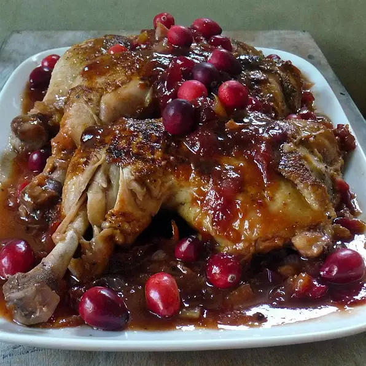

back to home
Cranberry BBQ Chicken

Ingredients
- 1 (2 to 3 pound) whole chicken, cut into pieces
- 2 tablespoons butter
- ½ teaspoon salt
- ¼ teaspoon ground black pepper
- ½ cup chopped celery
- 1 onion, chopped
- 1 (16 ounce) can whole cranberry sauce
- 1 cup barbecue sauce
Directions
- Preheat oven to 350 degrees F (175 degrees C).
- In a large skillet brown the chicken in butter/margarine. Season with salt and pepper. Remove from skillet and place in a lightly greased 9x13 inch baking dish.
- In the drippings (in the skillet), saute onion and celery until tender. Add cranberry sauce and barbecue sauce. Mix well.
- Pour cranberry mixture over chicken and bake in the preheated oven for 90 minutes, basting every 15 minutes.
Nutrition Facts
Per Serving:
743 calories; protein 42.6g; carbohydrates 53.9g; fat 39g; cholesterol 182.5mg; sodium 1013.4mg.